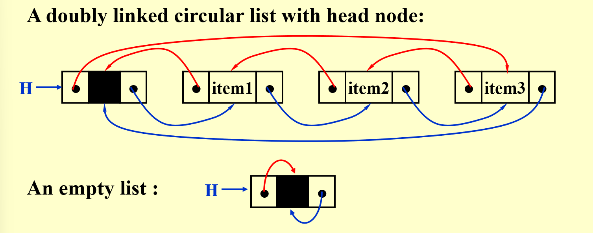
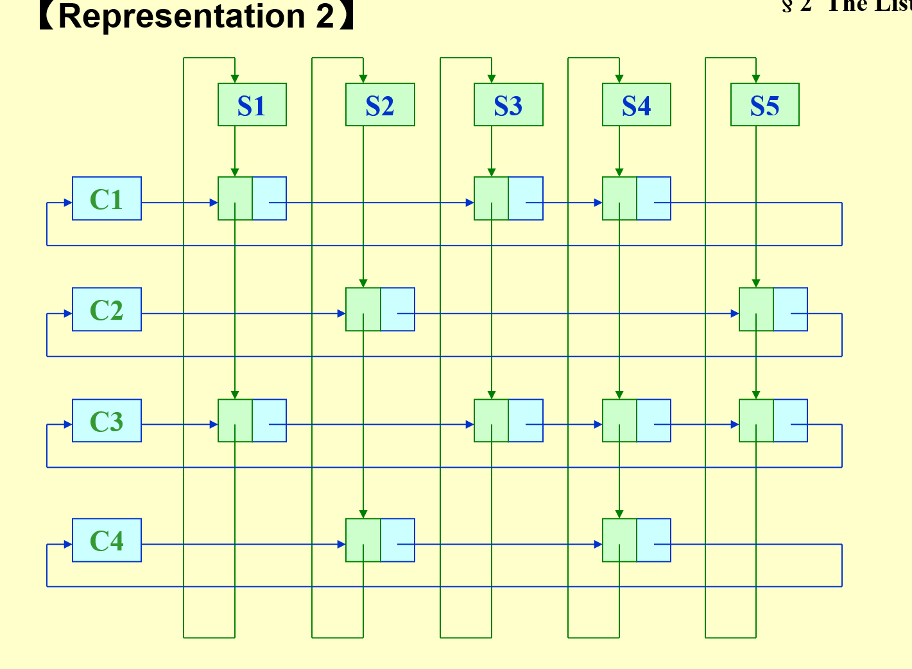
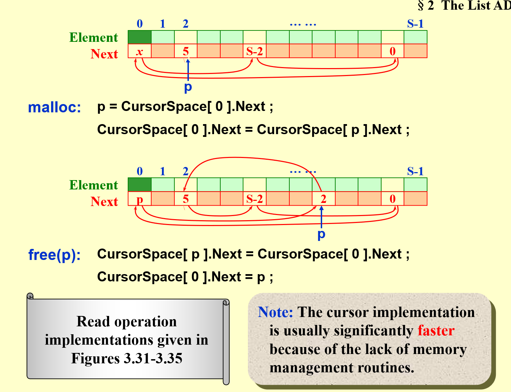
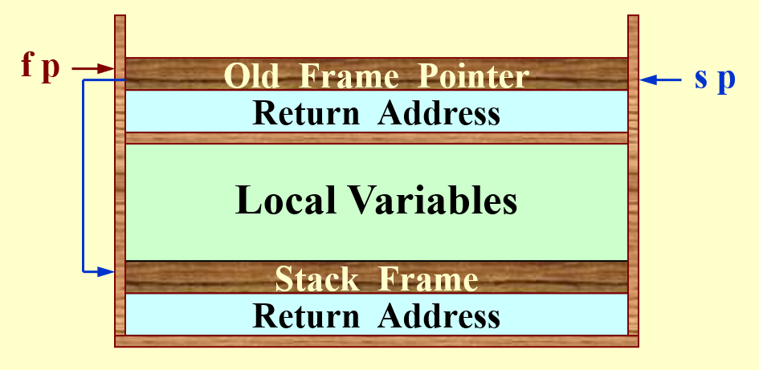
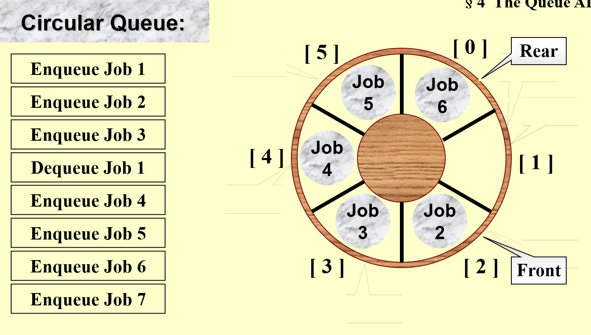
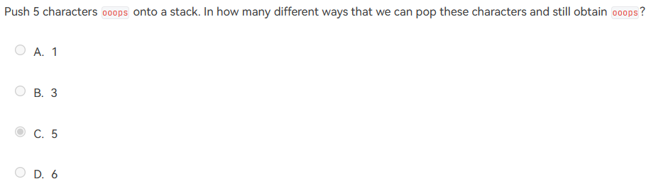
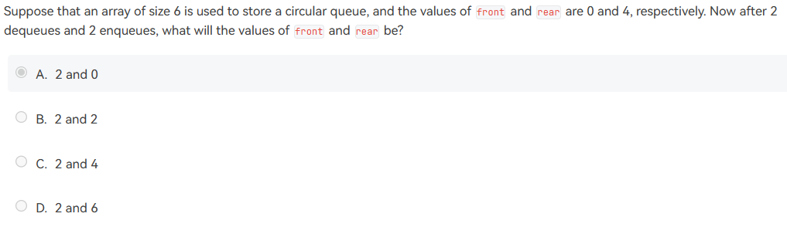

Ch.03 List
Abstract Data Type (ADT)¶
约 1382 个字 • 37 行代码 预计阅读时间 4 分钟
- \(Data Type = \{Objects\} \cup \{Operations\}\)
- ADT: The specification on objects and specification of the operations on the objects are separated from the representation of the objects and implementation on the operations.
- 封装，函数化编程，不考虑具体实现
The List ADT¶
Operations¶
- FindLength
- PrintList
- MakeEmpty
- FindKthElement
- InsertAfterKth
- Delete
- FindNext
- FindPrevious
Implementation¶
- Array
- 需要提前估计容量
- 插入删除 O(N)，移动数据
- 查找 k-th O(1)
Linked List¶
- 使用 dummy head node，可以删除第一个
Doubly Linked Circular Lists¶

- 方便查找 previous
Two Applications¶
The Polynomial ADT 多项式表示¶
- coefficient 系数 exponent 指数
- Operations
- FindDegree 找到最高次项指数
- Addition
- Subtration
- Multiplication
- Differentiation
Representation 1¶
- 对于稀疏数组，过于复杂
Representation 2¶
typedef struct poly_node *poly_ptr;
struct poly_node {
int Coefficient;
int Exponent;
poly_ptr Next;
} ;
typedef poly_ptr a; // nodes sorted by exponent
Multilists¶
[[Blog/mkdocs-blog-project/emergent-space-obmd/Fundamentals of Data Structure/Ch.09 Graph Algorithms#Adjacency Multilists]] 也使用到了 multilist 的思想
For example, represent the relationship between students and the courses. Array would be too complex in space

- 每个节点表示一个 pair relationship，节点内要存储学生编号和课程编号
HW: Sparse matrix representation
-
坐标列表（Coordinate List, COO）： 在这种表示中，矩阵被表示为三个数组：行索引、列索引和数据值。每个非零元素由其行索引、列索引和值组成。
-
压缩稀疏行（Compressed Sparse Row, CSR）： CSR 表示由三个数组组成：非零元素的值、行指针和列索引。行指针数组指向列索引数组中每个行的起始位置。这种表示方式适合于行操作，如行的插入和删除。
-
压缩稀疏列（Compressed Sparse Column, CSC）： CSC 与 CSR 类似，但是是按照列来组织的。它包含三个数组：非零元素的值、列指针和行索引。列指针数组指向行索引数组中每个列的起始位置。这种表示方式适合于列操作。
-
字典式（Dictionary of Keys, DICTIONARY）： 这种表示方法使用字典（或哈希表）来存储非零元素的位置和值，键是元素的索引对（行索引，列索引）。
-
块稀疏矩阵（Block Sparse Matrix）： 当矩阵的稀疏性在子矩阵级别上时，可以使用块稀疏矩阵表示。这种表示将矩阵分割成小块，并且只存储那些非零的块。
-
带状稀疏矩阵（Banded Sparse Matrix）： 当非零元素仅出现在矩阵的主对角线附近的几条对角线上时，可以使用带状稀疏矩阵表示。这种表示通常包含对角线宽度和非零元素。
Cursor Implementation of Linked Lists (no pointer)¶
- 维护一个
freelist，等价为从 0 开始的循环链表 - malloc，就是在
freelist中删去 0 之后的节点 - free，就是将一个节点添加到
freelist0 之后

Title
- malloc 可以看出
CursorSpace[0].Next总是队尾的空位，且队尾的下一个一定是空的 - free 操作的原理
- 将原本队尾第一个空位放在要删除的元素后面
- 将
CursorSpace[0].Next指向要删除的元素
The Stack ADT¶
Operations¶
int IsEmpty( Stack S );
Stack CreateStack();
DisposeStack( Stack S );
MakeEmpty( Stack S );
Push( ElementType X, Stack S );
ElementType Top( Stack S );
void Pop( Stack S );
- 满的 stack push error
- 空的 stack pop error
实现方法¶
链表实现¶
- dummy head 指向栈顶元素，相当于链表插入头节点
- 出栈需要
free()，但是可以使用一个recycle bin链表来存储所有 pop 出来的元素，减少free的次数有利于提升性能
数组实现¶
- 一定要封装好，不能让主程序能够直接读取非栈顶元素
- 对于 pop, push 需要进行检查
Application¶
Balancing Symbols¶
- 检查字符串中的括号等是否能过够配对
- On-line \(T(N)=O(N)\)
Postfix Evaluation¶
逆波兰表达式¶
a+b*c-d/einfix expression 中缀表达式- + a * b c / d eprefix expression 前缀表达式a b c * + d e / -postfix evalution 逆波兰表达式
操作方法¶
- 遇到元素，入栈
- 遇到符号，把栈顶两个元素拿出来处理，结果再入栈
- 算完之后输出栈内唯一元素
Infix to Postfix Conversion¶
没有括号的话¶
- 读到元素直接输出
- 读到符号
- 如果栈顶符号优先级 \(\ge\) 当前读到的符号，出栈
- 否则，入栈
- 最后 pop 剩余的符号
有括号¶
a*(b+c)-d ->
- 读到元素直接输出
- 读到符号（包括括号）
- if 读到
(，入栈 - else if 读到
)，一直出栈到左括号 - else if 栈顶不是
(&& 栈顶符号优先级 \(\ge\) 当前读到的符号，出栈 - else 入栈
- if 读到
可以理解为
- 读到
(一定入栈 - 读到
)才能让(出栈，而且中间的全部出栈 - 其他一样
注意，这个问题需要单独分析
Note: a – b – c will be converted to a b – c –. However, 223 ( \(2^{2^3}\) ) must be converted to 2 2 3 ^ ^, not 2 2 ^ 3 ^ since exponentiation associates right to left.
Function Calls - System Stack¶
- 系统里有两个指针，分别是 sp, stack pointer fp, frame pointer
- 尾递归可以优化成循环，编译器可以实现这种优化
- 递归会消耗大量系统资源，效率很低
- 能用递归完成的操作都一定可以不用递归完成

The Queue ADT¶
- 与栈相反，first in first out
- 尾部插入，队首取出
int IsEmpty( Queue Q );
Queue CreateQueue();
void DisposeQueue( Queue Q );
void MakeEmpty( Queue Q );
void Enqueue ( ElementType X, Queue Q );
ElementType Front( Queue Q ); // 获取队列第一个元素
void Dequeue( Queue Q );
实现¶
Array Implementation¶
struct QueueRecord {
int Capacity;
int Front;
int Rear; //Rear == -1 队列为空
int Size; // current size
ElementType *Array;
}
Circular Queue¶

- 队列首尾相接，相当于数组最后添加元素添加到数组的开头
- Rear 默认在 0，Front 默认在 1
- Enqueue 时，
rear++在rear加入 job - Dequeue 时，删去
front的 job，front++ - Rear 和 Front 差 2 认为是满栈，差 1 认为是空栈
- Enqueue 时，
HW¶
- Sequential List 就是顺序表，就是数组

- 由于 ps 不能变位置，只有前面的三个 o 可以以任意顺序输出
- 这样找到所有的可能
- i i i o o o
- i i o ...
- i i o i o o
- i i o o i o
- i o i ...
- i o i i o o
- i o i o i o
- i o o 不允许，已经空

- 结合 [[Blog/mkdocs-blog-project/emergent-space-obmd/Fundamentals of Data Structure/Ch.03 List#Circular Queue]] 内容思考